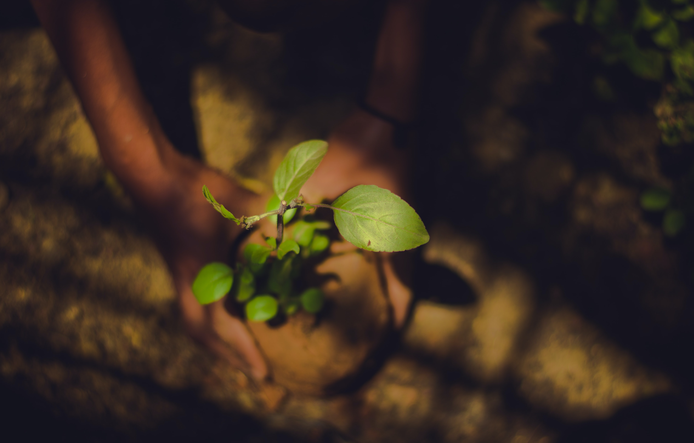
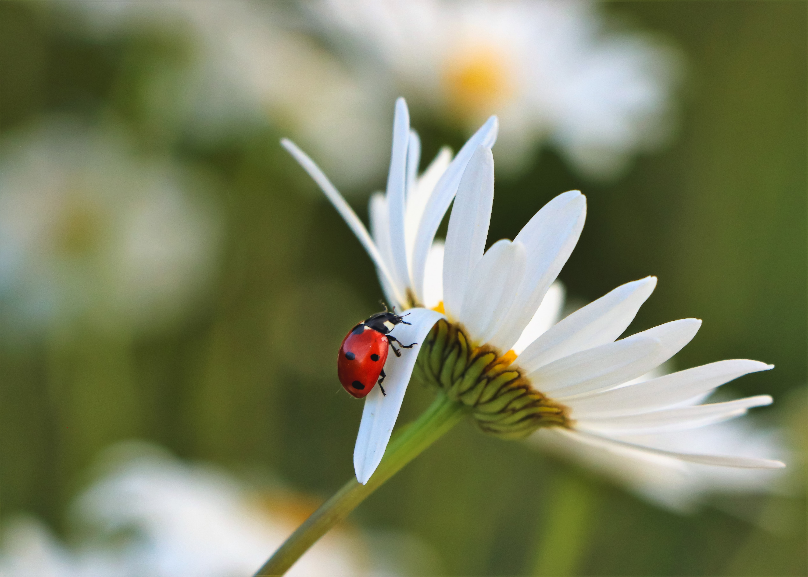
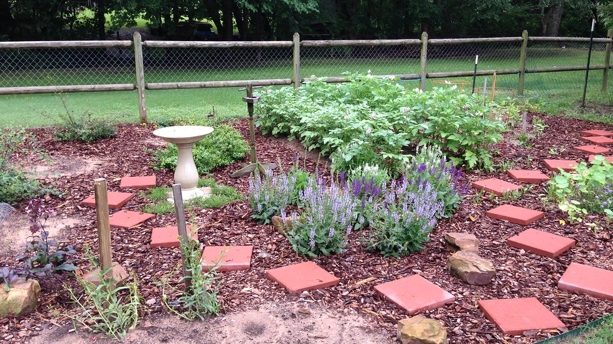

Plant Trees
As mentioned before, trees are great sources of nectar and pollen for bees and provide shelter for them to stay in. Planting trees such as dogwood and maple trees is a great way to help.
Stop Using Pesticides
If you have a garden of some sort, avoid using pesticides as much as possible. A possible alternative is introducing bugs to your garden that fight off pests such as ladybugs and spiders, which you can attract by planting certain things - for example, dill is a plant that attracts ladybugs!
Plant Bee Gardens
Planting plants that produce lots of nectar and pollen in your backyard or garden or anywhere you can get to will help provide nutrition to wild bees that can find their way to your efforts. Plants such as sunflowers, lilies, thyme, oregano, and basil are great for this, and plants that are native to where you live are especially helpful, as these are the plants that the wild bees there are used to.
Petition the Government

Write to the government officials in your area, such as the senators and governor, about your concerns in relation to climate change and the use of pesticides. Starting or signing petitions to the government can also help show the people in charge that you care about the bees, which can spark change! Here is an example of a good one: Petition Against Neonicotinoids
Reduce Your Carbon Footprint

While this won’t have a direct effect on the bees just yet, doing your part to help reduce climate change will help make it safer for bees. Doing things like using LED or fluorescent lights instead of incandescent light bulbs, buying locally produced groceries, recycling, and taking shorter showers are all things that can help.